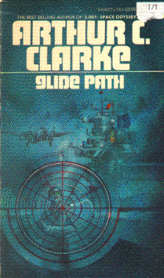

Glide Pathby Arthur C. CLarke
publisher: Bantam Books
Fiction, 200 pages | 
(book cover art, Copyright ©1963 Arthur C. Clarke)
Used with Permission. |
Return to the Book MenuPrevious|Next
Description:
A tale of the "other" technology developed by the allies to
win the Second World War: radar. A tale about Alan Bishop, a young man
who is instrumental in the development of radar-assisted landing systems
for the RAF in England.
Recommended for: Electrical engineers, history buffs,
adventure buffs.
Did-you-read questions:
Deadline: February 1, 2005.
These should be easy questions, but you should have the questions ready and keep an eye out during your reading. Each question should be answered with 1-2 sentences.
Note: these questions are not probably not the most important part of the book! Your essay will not have to cover these questions!
- What (wrong) quote from Shaw does Seargent Lebrun say to Bishop when Bishop
becomes a teacher?
- When Bishop visits the airfield, early in the novel, what becomes of the
plane T†Tommy?
- What small mishap leaves Bishop with a soiled uniform when he is escorting
Air Commodore Burrows to St. Erryn to meet Mark I?
- Where does Proffessor Schuster disappear to, halfway through the story?
- Who or what is FIDO?
Report Questions:Deadline: Peer Review Session on February 8, 2005; paper due February 10, 2005.
You should write a 3 - 4 page essay on one of the following questions. Your essay should include examples and references to the book, unless otherwise specified. Page number references are sufficient for citing material from the primary book. If you use outside materials, cite your sources in full. If you would rather write on a different topic, you may, but clear it with Mr. Howe or Ms. Sullivan first.
- Bishop's relationship with women is one that evolves, yet is hardly unorthodox.
Do you think that he has a heathy regard for them? Is he likely to have
a successful relationship in the future?
- One obvious spinoff from the technology in the novel is modern-day air
traffic control towers. What other modern marvels do you think came from
the advances made at this time?
- Was the process of development of the landing systems at St. Erryn good
science or just luck? What good habits of research do you notice? What
were some bad ideas?
- What about this story made it readable for you? What made it more interesting
or living than just a tale about a bunch of nerds in a van in the fog?
Graphic and Presentation:
Deadline: February 21 - March 3, 2005.You will give a 10 minute presentation on both of the following:
- Convince your peers that they should (or should not) read this book. (This may include a brief summary of the book.) Give examples of what was cool or worthwhile in the book, and what you got out of it (or didn't).
- Describe a (realistic) science idea that you learned about in this book, citing information from at least 2 external sources (other than the dictionary). If you would like help choosing or understanding an idea from your book, you are invited to come talk to Mr. Howe or Ms. Sullivan.
Note: This presentation should not be just a reading of your paper!Along with this presentation, you should have a graphic that will go with it. A Power Point presentation is recommended, but if you have a special idea for a something else, such as a model, an original video presentation, or a well done drawing/ painting/ sculpture/ etc., you may do so, provided it involves a similar level of effort and polish. Speak to Mr. Howe or Ms. Sullivan first if you are considering an alternate graphic format to the Power Point.
Return to the Book MenuPrevious|Next